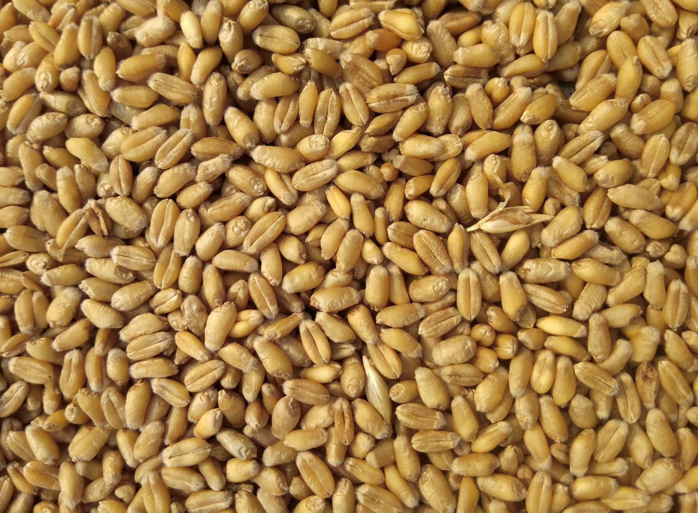

Context before alerts.
A useful record explains where an issue belongs, who owns it and what happens next.
For grain aggregators, warehouse managers and cooperative finance teams. A focused product concept for an everyday operational job.

A working grain register for aggregation teams. Reconcile intake, quality and dispatch before a small discrepancy becomes a costly one.
This website is one of ten independently branded B2B MVP concepts created for Uniqkode. It demonstrates the product story and a working browser-based operational workspace. It is not a registered business, a claim of existing customer traction or a production service.
The intended launch context is organizational teams operating in Nigeria and West Africa. Sample places, operational names and prices illustrate that context. They are not customer endorsements.
View the creator on GitHubA useful record explains where an issue belongs, who owns it and what happens next.
A priority can guide attention. A responsible operator still reviews the situation and acts.
The sample totals come from the same eight records you can open in the workspace.
Explore GrainLedger with eight realistic sample records.
No signup or payment required.